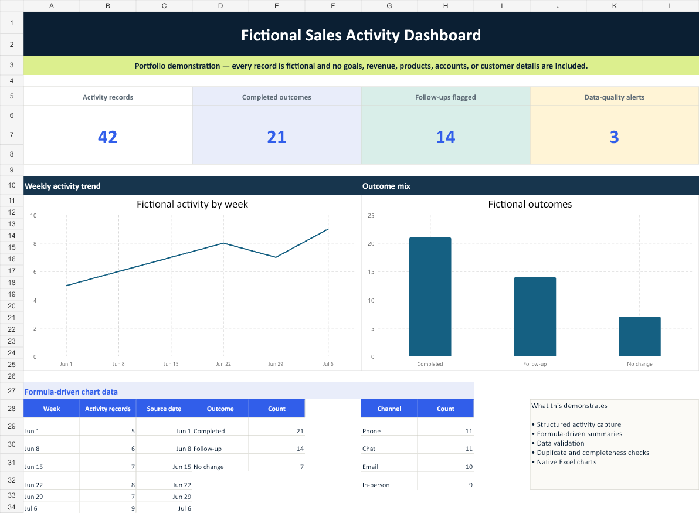

Activity log
Created one filterable table for dates, fictional interaction IDs, channels, outcomes, follow-up needs, status, and notes.
Excel case study · Fictional demonstration
I built this workbook to record daily activity in one table, flag duplicate IDs and incomplete entries, and update a dashboard automatically. The downloadable version contains only fictional information.
The need
Daily information becomes difficult to review when the same item is entered in different ways, required fields are skipped, or summaries have to be rebuilt by hand.
I kept the workbook simple: enter the information once, use drop-down lists for common fields, and let formulas update the checks, counts, and charts.
Dashboard view
The dashboard shows total entries, outcomes, follow-ups, entry alerts, weekly activity, and outcome counts. It does not include targets, revenue, product names, or real customer details.
Download the Excel demonstration
What I built
Created one filterable table for dates, fictional interaction IDs, channels, outcomes, follow-up needs, status, and notes.
Added set choices for channel, outcome, follow-up, and status so the same terms are used throughout the log.
Used formulas and color alerts to identify repeated demonstration IDs and missing required fields.
Connected summary counts and Excel charts to the log, then added instructions explaining how to use the file.
EnterAdd an activity row
→ChooseUse the drop-down lists
→CheckFlag data issues
→ReviewUpdate summaries and charts
How it works
New fictional rows are added to the activity table using the drop-down lists. The workbook then checks the entries and updates the dashboard from the same table.
The last columns explain why an entry needs attention, such as a duplicate ID or missing field.
Tools used
Contact
Email me or use the links below to view my resume and portfolio.